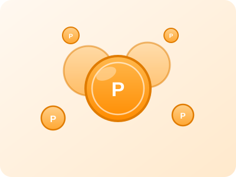
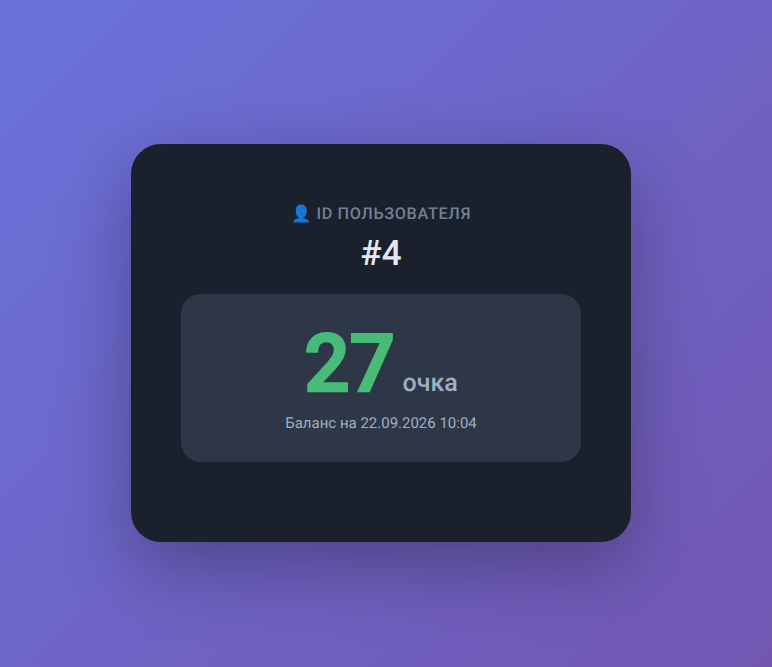
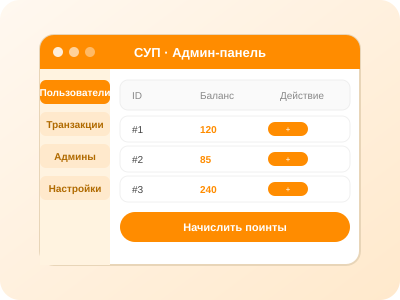
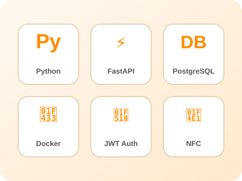

Сервис для фестиваля игр и косплея «ШоуМир». GitHub проекта
СУП — это внутренняя валюта фестиваля «ШоуМир». Участники получают поинты за активности, а затем тратят их на площадках фестиваля.

Участнику достаточно приложить NFC-метку к считывателю — и система мгновенно покажет его текущий баланс. Никаких приложений и регистраций.

Администраторы входят в систему по токену и управляют балансами участников. Разграничение прав позволяет контролировать, кто и сколько может начислять.

Бэкенд написан на Python с использованием FastAPI. Данные хранятся в PostgreSQL, вынесенном в отдельный Docker-контейнер.
